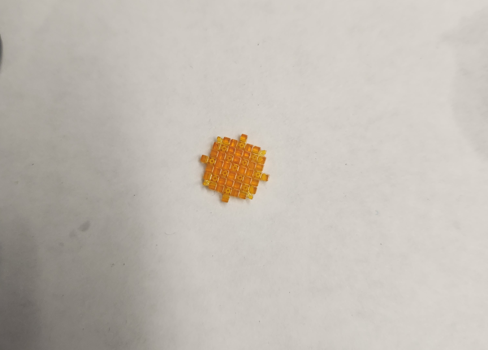
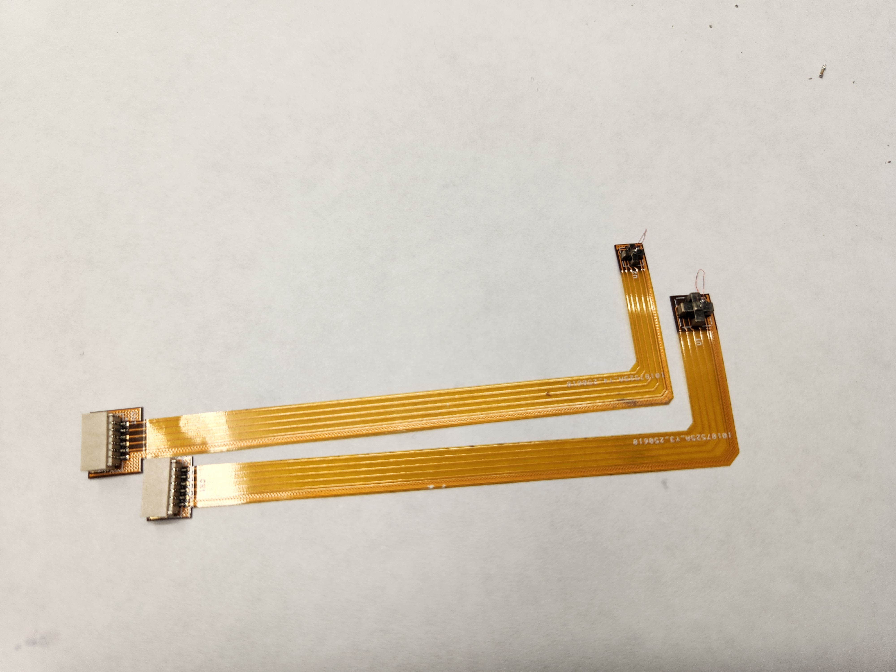
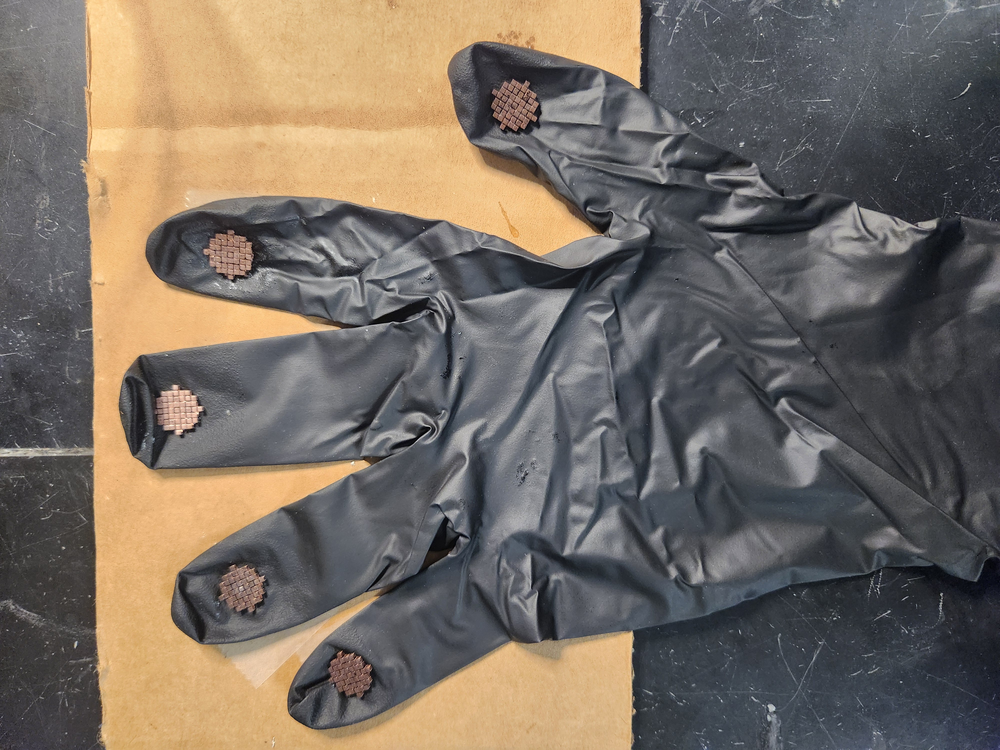

Research · UC Berkeley
Additive Manufacturing & Metamaterials Lab · May 2025 – Present
Since May 2025, I have worked with the Additive Manufacturing and Metamaterials research team at UC Berkeley. I was brought in to continue research begun by a PhD candidate on a long-term leave. My work has been on developing and integrating flexible PCBs onto robotic hand modules for localized force sensing.
Building upon an initial single compliant mechanism, I developed a multi-array architecture capable of sensing forces across multiple directions while mechanically decoupling signals to independently resolve strain in the x and y axes.
The arrayed configuration expanded the operational range of the sensor and improved measurement robustness by distributing loads across multiple structural elements. By aggregating and averaging the signals generated by each strut, the design reduced localized noise and produced more stable and reliable strain measurements.

Two-layer flexible PCBs were designed in tandem with the compliant mechanism to mount at the fingertip and provide a reliable electrical connection to the primary processing board located at the base of the robotic finger. The flexible substrate allowed the circuitry to conform to the finger's motion while maintaining stable electrical connections during actuation.
The primary design challenge was integrating the PCB with the piezoelectric sensing plates and the compliant mechanism in a stacked configuration, where the compliant structure required a direct electrical ground connection despite being separated from the PCB by the piezoelectric layer. To address this, individual copper wires were routed between the PCB grounding pads and the compliant mechanism struts.
While this enabled electrical grounding, the additional wiring introduced noise and crosstalk, leading to a redesign of the compliant mechanism's fabrication process. The final approach used multi-material 3D printing, where the struts were printed in a resin suitable for conductive plating while the connecting beams were printed in a non-plateable resin, enabling selective conductivity while preserving the mechanical structure.

The initial prototype of the sensing system was implemented using a glove-based platform, where a human operator acted as the robotic hand to evaluate the functionality of the sensing architecture. This configuration required a dedicated PCB mounted on each finger, allowing the compliant mechanism and piezoelectric sensing stack to capture force inputs during natural hand motions.
After validating the sensing concept, development progressed to integration with a robotic hand platform. To reliably mount the sensing assembly, a custom 3D-printed ring was designed to attach to the robotic fingertip, providing a stable interface for securing the PCB–compliant mechanism structure.
Through iterative testing and redesign, the compliant mechanism geometry was refined to more closely mimic the behavior of a button-like interface, while the printing material was updated to a resin with increased ductility and higher force tolerance, improving the durability and performance of the sensing system under repeated loading.
